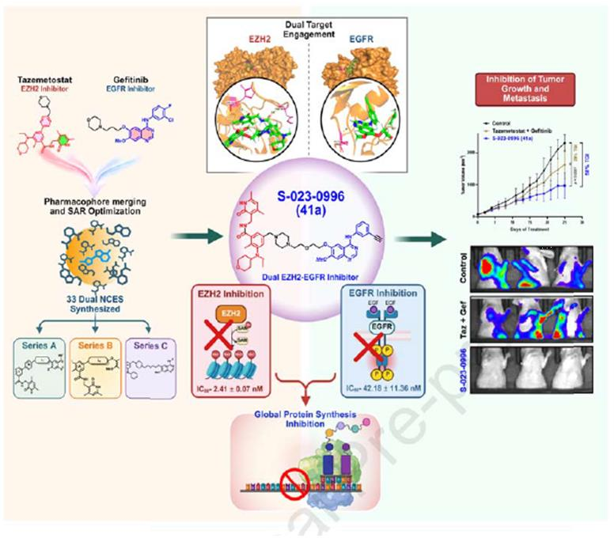
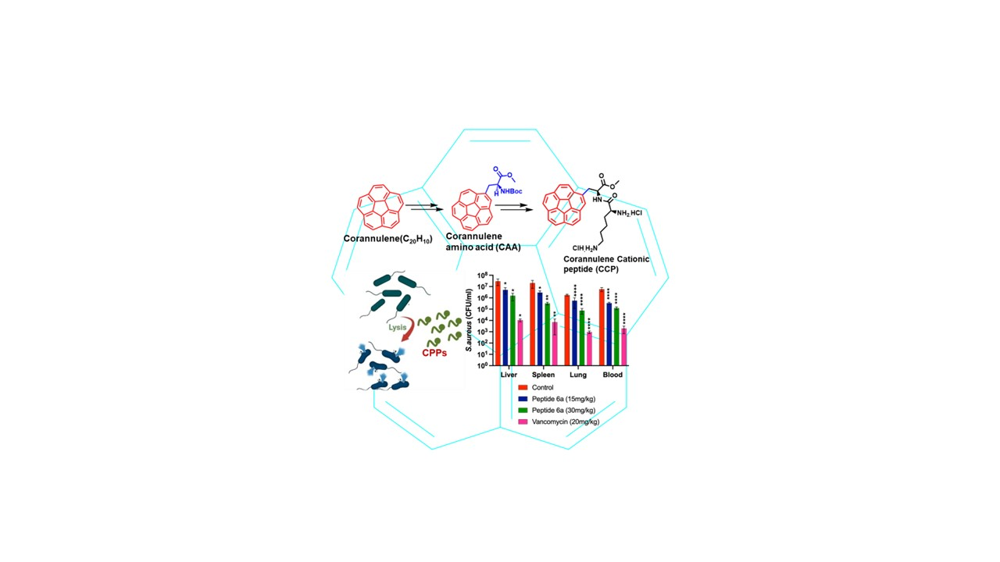
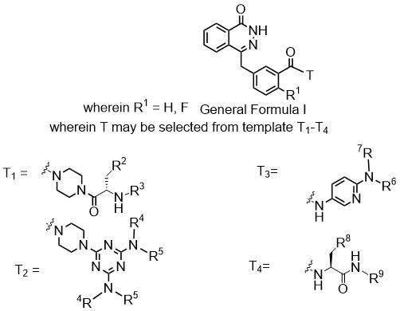

Portfolio — Medicinal & Organic Chemistry
Gautam Panda
Chief Scientist & Professor, AcSIR
Medicinal and Process Chemistry Division, CSIR–Central Drug Research Institute, Lucknow, India
Gautam Panda designs and builds small molecules — from first synthetic routes to preclinical leads — working across cancer, tuberculosis, malaria and antibacterial resistance at CSIR-CDRI, Lucknow.
He trained as a synthetic organic chemist under Prof. Goverdhan Mehta at the University of Hyderabad and the Indian Institute of Science, working on the total synthesis of fullerene fragments, before postdoctoral appointments with Prof. Howard Alper at the University of Ottawa and with Prof. Prabhat Arya at National Research Council Ottawa, Canada, and Prof. Tse-Lok Ho in Taiwan. He joined CDRI as a Scientist in 2002 and has since held every rank up to his current position as Chief Scientist.
His group's chemistry has moved in two directions at once: discovery of new chemical entities against cancer, TB and malaria, and — increasingly — cost-effective, scalable process routes for off-patent and blockbuster drugs (Nintedanib, Olaparib, Acyclovir, Almitrine, Ifenprodil) aimed at making treatment more affordable in India. Two of his repurposed-drug process routes reached DCGI asked for protocol submission of Phase II trials for COVID-19/ALI, and two others have been shared with industry partners under confidentiality agreements.
He has supervised 22 PhD students to completion (7 in progress), guided 25 Masters and 15 project-assistant researchers, and hosted visiting appointments in Japan (Osaka University, Hiroshima University, Institute for Molecular Science) and Germany (Heinrich Heine University, Düsseldorf).
Current research programme
Six active lines of work, spanning early discovery through to scale-up chemistry.
-

EZH2–EGFR dual inhibitors for triple-negative breast cancerTNBC lacks targeted therapy options. Concurrent EZH2/EGFR overexpression predicts the worst survival outcomes, so the group is designing first-in-class chemical probes that bind and inhibit both targets in one molecule. Lead compound S-023-0996 showed 60% tumour growth inhibition in orthotopic allograft models with significant suppression of metastasis.
-
 Purine-based phthalazinones — dual PARP/mTOR inhibitors
Purine-based phthalazinones — dual PARP/mTOR inhibitorsFDA-approved PARP inhibitors work mainly in BRCA-mutated cancers. Because mTOR inhibition sensitises cells to PARP inhibition, the group built a dual inhibitor intended to work in both BRCA-deficient and BRCA-proficient disease. Lead S-023-1025 outperformed both Olaparib and Rapamycin alone, giving 66% tumour growth inhibition in xenograft models regardless of BRCA status.
-
Biphenyl hydroxamates — dual BCL-2/HDAC inhibitors
Aimed at multiple myeloma, where resistance to Venetoclax and poor tolerability of HDAC inhibitors like Vorinostat limit current options. A biphenyl-hydroxamate chemical library is being built to deliver simultaneous BCL-2/HDAC inhibition with better bioavailability and a simpler dosing regimen.
-

Corannulene-derived amphiphilic buckybowlsThe first reported use of the bowl-shaped corannulene scaffold in antibacterial research. Water-soluble corannulene–amino-acid amphiphiles disrupt bacterial membranes with broad-spectrum, synergistic activity — published in J. Med. Chem. 2024.
-
Trisubstituted methanes (TRSMs) against tuberculosis and malaria
A long-running chemical-entity programme built around a simple triarylmethane core. Lead S006-830 matched the in-vivo efficacy of ethambutol and pyrazinamide against M. tuberculosis, including drug-resistant clinical isolates, across a series of papers from 2008 to 2021.
-
 by Innovative Process Routes.jpg) Affordable process chemistry for blockbuster and off-patent drugs
Affordable process chemistry for blockbuster and off-patent drugsUnder the Atmanirbhar Bharat drive for domestic API supply: new, scalable, greener routes to Nintedanib, Olaparib, Acyclovir, Sulbactam, Nitisinone, Almitrine and Ifenprodil — several already licensed or under CDA with industry partners (Reliance Rasayan, Dr. Reddy's Laboratories).
Positions & appointments
Education
Awards, fellowships & recognitions
- 2022Chirantan Rasayan Sanstha Gold Medal
- 2020JSPS-Bridge Fellowship
- 2019Fellow, Academy of Science & Technology (FAScT), West Bengal
- 2016Member, Evaluation Committee, MEXT Fellowships, Japan (ongoing)
- 2014Member, National Academy of Sciences, India (MNASc), Allahabad
- 2011JSPS Invitation Fellowship for Research in Japan
- 2012Chemical Research Society of India (CRSI) Bronze Medal in Chemistry
- 1992/93CSIR NET-JRF and GATE, qualified
Translational highlights
Work that has moved beyond the journal page — into patents, licensing agreements and clinical trial permissions.
Repurposed COVID-19/ALI therapeutics
New process routes for Almitrine and Ifenprodil — off-patent drugs with no existing Indian supplier — were patented and licensed to Reliance Rasayan Private Limited, Ahmedabad. India's drug regulator (DCGI) asked for protocol submission of Phase II trials of both molecules in COVID-19/acute lung injury patients, based on this patented synthetic route.
Affordable oncology & antiviral APIs
New, scalable process routes for the blockbuster anticancer drugs Nintedanib and Olaparib, and for the antiviral Acyclovir, are under confidentiality agreement with Dr. Reddy's Laboratories, Hyderabad, with technology-transfer discussions ongoing toward domestic manufacture.

BRCA-mutant and BRCA-wild-type breast cancer leads
Lead compound S-024-0935 inhibits BRCA2-mutant cell growth at 2–57 nM with 112–2,500-fold selectivity, and shows strong bioavailability (SC 67% mouse, 94% rat) with improved haematological safety over Olaparib. A second lead, S-023-1025, is a first-in-class dual PARP–mTOR inhibitor active independent of BRCA status.
Tyrosine-derived benzoxazine in breast cancer
Regressed tumour growth in a rat syngenic mammary tumour model at 5 mg/kg, outperforming tamoxifen, without mortality (J. Med. Chem. 2021).
Selected publications
Five recent papers representative of the group's current direction. The complete, chronological list of 140+ papers is on the publications page.
-
Targeting two therapeutic vulnerabilities of TNBC (EZH2 and EGFR) with a single chemical entity offers substantial preclinical treatment advantages
-
Corannulene amino acid derived water-soluble amphiphilic buckybowl as broad-spectrum membrane-targeting antibacterial agents
-
Stereoselective construction of 3-(aminoalkylidene)oxindoles in one pot: a scalable process for multigram-scale preparation of Nintedanib
-
A scalable and eco-friendly total synthesis of the PARP inhibitor Olaparib
-
Tyrosine-derived novel benzoxazine active in a rat syngenic mammary tumour model of breast cancer
Patents filed
- A cost-effective process for preparation of Nintedanib — IN202513002027, filed 03.01.2025; shared with Dr. Reddy's Laboratories, Hyderabad
- Purine-based phthalazinones as dual PARP and mTOR inhibitors and use thereof — IN202411038350, filed 15.05.2024
- 2-Pyridone based quinazoline compounds as dual EZH2 and EGFR inhibitors — IN202411036881, filed 09.05.2024; PCT/IN2026/050763
- Amino acid based Poly(ADP-ribose)polymerase (PARP) inhibitors, process and use thereof — IN202411019816; PCT/IN2026/050400
- Process for preparation of Phthalazinone (Olaparib) derivatives and uses thereof — IN202211013919, filed 14.03.2022; open for licensing, shared with Dr. Reddy's Laboratories
- New synthesis of Nintedanib, key starting materials and intermediates — IN202211006560, filed 07.02.2022; open for licensing
- Process for preparation of diphenylmethylpiperazine derivatives and their uses — IN202111003021, filed 21.01.2021; shared with Reliance Rasayan Pvt. Ltd.
- Process for preparation of phenylethanolamine compounds and use thereof — IN202111015502, filed 31.03.2021; shared with Reliance Rasayan Pvt. Ltd.
- Aryl aryl methyl thio arenes (AAMTAs) as antimalarial agents and preparation thereof — 0364DEL2011, filed 31.01.2012
- Thiophene-containing trisubstituted methanes (TRSMs) as antitubercular agents — filed 22.03.2010; published 14.12.2012
- Diaryloxy methano phenanthrenes: a new class of antituberculosis agents — 1178/DEL/2004, filed 24.06.2004
Mentorship & alumni
22 PhD students graduated (7 in progress), 25 Masters students, 15 project assistants and 3 postdoctoral researchers. A sample of where doctoral alumni are now:
-
Shagufta2002–2007Design and Synthesis of Antiestrogens for Contraception, Osteoporosis and management of other estrogen related disordersPostdocDonna Nelson, University of Oklahoma, USAPostdocA. IJzerman, Leiden/Amsterdam Centre for Drug Research, University of Leiden, Netherlands
-
Jitendra Kumar Mishra2002–2007Quest for Potential Bio-dynamic AgentsPostdocPeter Wipf, Department of Chemistry, University of Pittsburgh, USAPostdocWilliam R. Roush, The Scripps Research Institute, Florida, USA
-
Ajay Kumar Srivastava2003–2008An Approach to Target and Diversity Oriented Synthesis in Drug DiscoveryAwardBest Thesis, Dr. M M Dhar Memorial Award, CDRIPostdocS. B. Park, Department of Chemistry, Seoul National University, Korea
-
Sajal Kumar Das2003–2008Diversity Oriented Organic Synthesis of Biologically Important MoleculesPostdocBong Rae Cho, Department of Chemistry, Korea University, KoreaPostdocAlfred Hassner, Department of Chemistry, Bar-Ilan University, Israel
-
Maloy Kumar Parai2004–2009Design, Synthesis and Evaluation of Bio-active Privileged Structures for Drug DiscoveryPostdocTariq M. Rana, Birmingham Institute, California, USA
-
Krishnananda Samanta2007–2012Synthesis of Bioactive Natural Products and Chiral Heterocycles from α-Amino AcidsPostdocJean-Francois Hernandez, CNRS UMR5247, Faculté de Pharmacie, Montpellier, France
-
Sanjit Kumar Das2007–2012α-Amino Acids Based Stereoselective Synthesis of Biologically Important Natural Products and Natural Product-like Molecules
-
Subal Kumar Dinda2007–2012Design, Synthesis and Pharmacological Evaluation of Small Organic Molecules for Therapeutic AgentNowWorking in industry
-
Ritesh Singh2006–2011Quest for Heteropolycycles as Therapeutic AgentsPostdocRudi Fasan, Department of Chemistry, University of Rochester, NY, USAPostdocChi-Moen Park, KoreaNowAssistant Professor, Central University of Rajasthan, Jaipur
-
Priyanka Singh2009–2014Carbohydrate and Amino Acid as Chiral Synthons: Approach towards Natural Product and Natural Product like Designer Synthetic MoleculesPostdocJean-Francois Hernandez, Institut des Biomolécules Max Mousseron, CNRS UMR5247, Faculté de Pharmacie, Montpellier, France
-
Saurav Bera2009–2014Quest for Target and Diversity Oriented Synthesis of Medicinally Important Natural Product and Natural Product-like Molecules from Amino AcidsWasResearch Scientist, Dr. KPC Life Sciences, KolkataNowPostdoctoral Research Fellow, Zhejiang University, China
-
Amit Kumar Jana2009–2014Synthetic Approach towards Alkaloids using Amino Acids as Building BlocksNowTCG Life Sciences, Kolkata
-
Sudipta Kumar Manna2009–2014Synthetic Approach towards Amino Acid and Benzopyran Based Tetracyclic Architectures of Biological ImportanceWasTCG Life Sciences, KolkataNowJSPS Postdoc in Prof. Masato Kitamura's group, University of Nagoya, Japan
-
Sankalan Mondal2009–2015Design, Synthesis & Molecular Modelling Studies & Bio evaluation of Trisubstituted Methanes and Amino Acids Derived HeterocyclesNowDST National Postdoctoral Fellow, Banaras Hindu University (BHU), Varanasi
-
Srinivas Lavanya Kumar M2012–2018Amino Acid Derived Benzofused Architectures as Possible Anticancer AgentsNowLakshya Lifesciences Pvt. Ltd., Hyderabad
-
Bidhu Bhusan Karkara2015–2019Quest for Antimycobacterial Agents from Trisubstituted Methanes and NitrogensNowAssistant Professor, Vignan's Foundation for Science, Technology and Research (Deemed to be University), Guntur, Andhra Pradesh
-
Asha Ganeshar2014–2019Amino Acids as Chirons: Approaches towards Natural Product-like Molecules as Anticancer and Antitubercular Agents
-
Amit Kumar2017–2022Quest for Benzofused N-Heterocyclic Architecture as Anti-tubercular agents
-
Kasim Ali2018–2023Tri and Tetra-substituted Methanes and Ethanes as Medicinally Important Molecules
-
Saroj Maji2018–2023Quest for Cationic Anti-microbials and Anti-cancer Agents Based on Bucky-bowl Derived Unnatural Amino Acids and Heterocycles
-
Arpita Banerjee2019–2024An Odyssey Towards Amino Acid & Heterocycle Based Privileged Structures as Pharmacologically Active AgentsNowResearcher, Jubilant Biosciences, Noida
-
Indranil Chatterjee2019–2024An Approach to Amino Acid Based Bucky-Bowl Derivatives and Heterocycles as Therapeutic AgentsNowAssistant Professor, Central University of Jammu
-
Deblina Roy2017–2023Design, Synthesis, Structural, Photophysical and Biological Studies of Heterocyclic Small MoleculesNotePh.D. awarded by BHU; worked at CDRI
Current group
Ashok Sharma (Technical Officer), Sandeep Bhattacharya, Souvik Barman, Sabyasachi Halder, Sohini Chatterjee, Pragya Tiwari, Iqra Farooq, Suman Majee.
Get in touch
CSIR-Central Drug Research Institute
Jankipuram Extension, Sitapur Road
Lucknow 226031, Uttar Pradesh, India